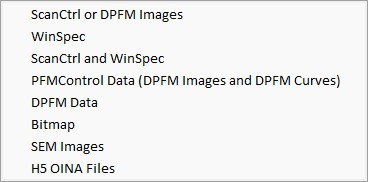

|
导入概述
|

ScanCtrl或DPFM图像
从旧版WITec软件"ScanCtrl"导入数据。
WinSpec
从WinSpec软件导入数据。
ScanCtrl和WinSpec
组合导入来自ScanCtrl和WinSpec的数据。
PFMControl数据（DPFM图像和DPFM曲线）
导入PFM数据。
DPFM数据
导入DPFM数据。对话框允许您详细选择要导入的DPFM曲线。
位图
从硬盘导入一个或多个位图文件作为新的位图数据对象到项目中。
SEM图像（仅在许可证存在时可用）
导入使用扫描电子显微镜创建的TIF或PNG图像文件。
TIF必须为8/16位灰度或8位彩色格式。
H5 OINA文件
从.h5oina文件（来自AZtec软件）导入EDS、电子和分层图像。
也可以将一个或多个.h5oina文件从Windows资源管理器拖放到WITec Project的主窗口中。